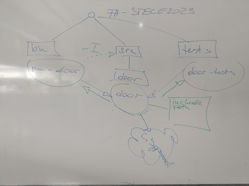
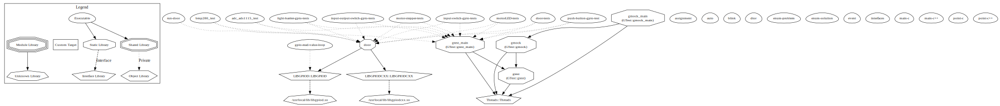

2025-06-16 (3 VO): CMake, And A Little Git#
CMake#
Dependencies#
Node/Target Definitions, Basic Visualization#
run-door(throughadd_executable)add_executable(run-door run-door.cpp) target_link_libraries(run-door door)
door(throughadd_library)add_library( door door.h door.cpp ... )
Visualizing
$ cd ~/My-Builds/FH-STECE2023-x86_64 $ cmake --graphviz dependencies.dot ~/My-Projects/FH-STECE2023 $ dot -Tsvg dependencies.dot > dependencies.svg
Install libgpiod, And Visualize Again#
Optional Dependencies
if (LIBGPIOD_FOUND) # <-- set toplevel by find_package(LIBGPIOD) target_link_libraries(door LIBGPIOD::LIBGPIOD) else() message(WARNING "door will not use libgpiod (which has not been found). note that this might lead to errors in the build process") endif()
Install
libgpiod, and try again# dnf install libgpiod-devel
$ pwd /home/jfasch/My-Builds/FH-STECE2023-x86_64 $ rm -rf * # <-- LIBGPIOD_FOUND is cached $ cmake --graphviz dependencies.dot ~/My-Projects/FH-STECE2023 $ dot -Tpng dependencies.dot > dependencies.png $ loupe dependencies.png
⟶ more dependencies
Include Paths#
Build information like include paths are propagated along reverse edges
# build information (include path) for our users
target_include_directories(
door
PUBLIC
${CMAKE_CURRENT_SOURCE_DIR}/.. # <-- users have to e.g. say #include <door/motor.h>
)
Git: Merge, Rebase#
Merge#
Create branch
merge-demoModify
bin/run-demo.cppCommit
Checkout
mainModify
bin/run-demo.cppCommit
Show:
gitk --allMerge: on
main,git merge merge-demoShow:
gitk --all
Rebase#
Create branch
rebase-demoModify
bin/run-demo.cppCommit
Checkout
mainModify
bin/run-demo.cppCommit
Show:
gitk --allCheckout
rebase-demoTransplant onto
main:git rebase mainShow:
gitk --all
What Is An OS Image? How Do I Write It Onto SD-Card?#
…